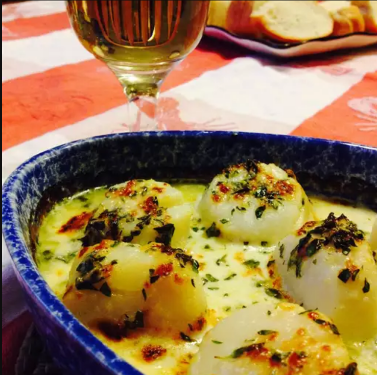

Scallops Gratin

As far as I'm concerned, a simple gratin is the most
delicious way to cook fresh scallops. The only real way to
screw this recipe up would be to use the wrong scallops.
And by wrong, I mean any scallops that have been soaked in
a preservative brine. These are easy to identify, as they're
usually sitting in a pool of milky liquid. What you want are
usually sold as wild 'day-boat,' 'diver,' or 'dry-pack'
scallops. They are really expensive, and worth every penny.
Serve with French bread for dipping.
Ingredients
- 2 tablespoons melted butter, or as needed, divided
- 1/4 cup creme fraiche
- 1/4 cup white wine
- 1 teaspoon lemon zest
- 1 pinch cayenne pepper, or to taste
- 1 pinch kosher salt, or to taste
- 8 dry-pack sea scallops
- 2 tablespoons chopped fresh tarragon
- 2 tablespoons finely grated Parmesan cheese
Steps
- Preheat oven to 450 degrees F (230 degrees C). Brush 2
small gratin dishes with 1 tablespoon melted butter.
- Whisk creme fraiche, white wine, lemon zest, cayenne pepper,
and kosher salt together in a bowl until sauce is smooth.
Place scallops in sauce and toss to coat; let sit until
flavors begin to blend, about 5 minutes. Divide scallops
between prepared gratin dishes and pour remaining creme
fraiche sauce over the top. Top with tarragon and Parmesan
cheese. Drizzle remaining butter over the top.
- Bake in the preheated oven for 4 minutes. Increase oven
setting to broil and continue cooking until scallops are
golden brown, slightly springy, and opaque, 2 to 4 minutes
more.
Home